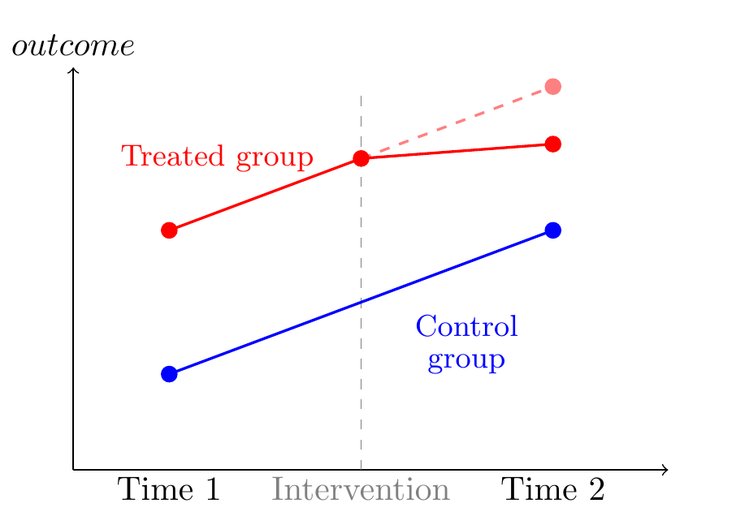
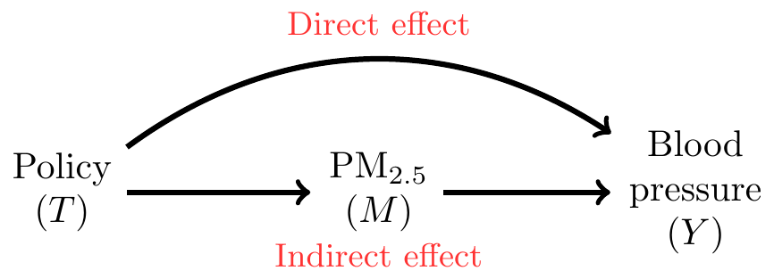

How Do Household Energy Transitions Work?
Abstract
Introduction
Methods
Results
Conclusions
1 Introduction
China is deploying an ambitious policy to transition up to 70% of households in northern China to clean space heating, including Beijing. To meet this target the Beijing municipal government announced a two-pronged program that designates coal-restricted areas and simultaneously offers subsidies to night-time electricity rates and for the purchase and installation of electric-powered, air-source heat pumps to replace traditional coal-heating stoves. The program is being rolled out on a village-by-village basis; however there is uncertainty as to when villages will receive the program. The variability in when the policy is applied to each village allows us to treat the roll-out of the program as a quasi-randomized intervention. Households may also be differentially affected by this program due to factors such as financial constraints, preferences and social capital, and there is uncertainty about whether and how this intervention may affect indoor and outdoor air pollution, as well as health behaviors and health outcomes.
2 Background
2.1 Context for the policy
Household coal burning has been a major contributor to indoor and outdoor air pollution in northern China, especially in winter. Prior to 2016, coal fuel was used to meet over 80% of northern China’s space heating demand (ref NRDC doc). Household coal-fuelled heaters, common in peri-urban and rural areas without access to centralized heating, burned approximately half of the over 400 million tons of coal used for space heating (ref NRDC doc) and contributed to ~30% of northern China’s wintertime air pollution. [[[something on health impacts]]]
Replacing household coal stoves with clean heating alternatives was considered a potentially impactful intervention to reduce outdoor PM2.5 and its health impacts.
A number of clean heating options including electric heat pumps, gas heaters, and electric resistance heaters with thermal storage were widely promoted by the Chinese government (ref NRDC doc).
By 2021, over 36 million households in northern China were treated by the policy and an estimated 21 million more households were expected to be treated by 2025. Whether this large-scale energy policy yielded health benefits remains a critical and unresolved question.
2.2 Prior evidence of household energy interventions and air pollution
See report from Woolley et al (Woolley et al. 2022)
2.3 Prior evidence on clean energy interventions
Most previous health assessments of household energy technologies have focused on cookstoves and not heating stoves. Randomized trials of less polluting cookstoves indicate a cardiovascular benefit of clean heating energy transition. In Guatemala, a chimney stove intervention lowered exposure to air pollution and reduced the occurrence of nonspecific ST-segment depression, an indicator of health conditions including myocardial ischemia, in older women. That same study and other trials in Nigeria and Ghana observed reductions in blood pressure (range: −3.7 to −1.3mmHg) in women assigned gas, ethanol, or improved combustion biomass stoves, and are supported by non-randomized, controlled intervention studies in Nicaragua and Bolivia (blood pressure reductions ranging −5.9 to −5.5mmHg). In contrast, a recent multi-country randomized trial did not observe a protective effect of gas stoves on gestational blood pressure despite large reductions in indoor and personal exposures to PM2.5, though the participants were younger (mean age: 25y) than in studies showing a blood pressure benefit of intervention (mean ages: 28 to 53y).
The few previous evaluations of household energy policies, mostly in high-income countries, have also indicated some health benefit, though many did not control for secular changes in health over time. Residential wood-burning bans were associated with reductions in cardiovascular hospitalizations (-7%) in California’s San Joaquin Valley, and with reduced cardiovascular (17.9%) and respiratory (−22.8%) mortality in Launceston, Tasmania (Australia), though neither study fully controlled for secular improvements in health. Most relevant to our study are two quasi-experimental assessments of coal replacement policies. Small decreases in chronic lung diseases (-3.0 to -1.1%) were observed in a multi-city cohort of 8524 Chinese adults in cities where the coal-to-clean energy policy was piloted compared with adults in cities not included in the pilot. The study observed no change in physician-diagnosed cardiovascular diseases, potentially due to the only one-year post-policy period or confounding by other city-wide air quality and health-related policies. In a population-based study in Ireland, reductions in respiratory mortality were observed, but no effect was found for cardiovascular mortality after accounting for secular changes in health.
2.4 Importance of understanding mechanisms through which policies may affect outcomes.
3 Specific Aims and Overarching Approach
This study used three data collection campaigns in winter 2018/19, winter 2019/20, and winter 2021/22, as well as a partial campaign in winter 2020/21 to advance the following aims:
Estimate how much of the policy’s overall effect on health, including respiratory symptoms and cardiovascular outcomes (blood pressure, central hemodynamics, blood inflammatory and oxidative stress markers), can be attributed to its impact on changes in PM2.5;
Quantify the impact of the policy on outdoor air quality and personal air pollution exposures, and specifically the source contribution from household coal burning (Previously Aim 3);
Quantify the contribution of changes in the chemical composition of PM2.5 from different sources to the overall effect on health outcomes (Previously Aim 2).
4 Study Design and Methods
4.1 Location, context, and recruitment
In December 2018 we recruited 50 villages across 4 administrative divisions of peri-urban Beijing to participate in our study. Villages were selected on the basis of their residents primarily using household coal and/or biomass stoves, and because roughly half of the villages were expected to enter into the CBHP policy over the course of our study. We used local guides in each village to help determine a roster of households that were not vacant during the winter months, from which we selected households to recruit for participation.
We recruited approximately 20 households in each village and randomly selected one eligible person from each household to participate. Participants were eligible to participate if they were over 40 years old, lived in the study villages, were not planning to move out of the village in the next year, and were not on current immunotherapy or treatment with corticosteroids. Research staff introduced the study and its measurements to an eligible person in each household and answered any questions related to the study. All participants provided written informed consent prior to joining the study. The study protocols were approved by research ethics boards at Peking University (IRB00001052-18090) and McGill University (A08-E53-18B).
4.2 Measures
Village level:
- Outdoor air pollution
- Qualitative and quantitative information on current policies/programs with government funding from local leaders
Household level:
- Questionnaire to assess energy use and related expenditures
- Indoor air temperature (~75% of homes for 2+ winter months)
- Indoor PM2.5 in ~50% of study homes
- Electricity use based on meters
4.2.1 Individual level:
Questionnaires on health status, behaviors, and medication
Personal exposures to PM2.5 and black carbon (50% of participants)1
To measure personal exposure we used two types of samplers: Personal Exposure Monitors (PEMs, Apex Pro; Casella, UK) and Ultrasonic Personal Aerosol Samplers (UPAS, Access Sensor Technologies, Fort Collins, CO, USA). PEMs actively sampled at a flow rate of 1.8 L/min, and UPAS was at 1.0 L/min (Volckens et al. 2017). Both samplers housed 37 mm PTFE filters (VWR, 2.0-μm pore size) and were equipped with a cyclone inlet with a 2.5 μm cutpoint. Sampler flow rates were calibrated the night before deployment and also measured after the sampling period. Few post-sampling measurements (16 out of 494, 3%) deviated from the target flow rate by >10%. Participants were instructed to wear a small waistpack (for the PEM and sampling pump) or an arm bag (for the UPAS) for 24 hours, which they could place within 2 meters while sleeping, sitting, or bathing. Field blanks were collected at a rate of ~10% in each village. All filters were placed in individually labeled Petri dishes, sealed in plastic bags, and then transported to a field laboratory and immediately stored in a -20°C freezer. Following completion of the field sampling campaign, the samples and blanks were transported to Colorado State University, where they were stored in a -20°C freezer prior to PM2.5 mass measurement and BC analysis.
All filters were placed in an environmentally-controlled equilibration chamber (21-22 °C, 30-34% relative humidity) for at least 24 hours before tare and gross weighing. Before each weight was taken, filters were discharged on a polonium-210 strip for at least 15 seconds. Filters were weighed on a microbalance (Mettler Toledo Inc., XS3DU, USA) with 1-μg resolution in triplicate or more, until the differences among three weights were less than 3 μg. The average of three readings was used to determine filter mass, which was then blank-corrected using the median value of blank filters [3 μg for UPAS-collected filters (53% of samples); 33 μg for PEM-collected filters (47% of filter samples)], and PM2.5 concentrations were calculated by dividing the mass by the sampled air volume.
Filters were analyzed for black carbon (BC) using an optical transmissometer data acquisition system (SootScan^TM OT21 Optical Transmissometer; Magee Scientific, Berkeley, CA, USA). Light attenuation through each filter was measured before and after sampling in the field. To calculate BC mass, the difference between the pre- and post- light attenuation was converted to a mass surface loading using the classical Magee mass absorption cross-sections of 16.6 m2/g for the 880 nm channel optical BC (Ahmed et al. 2009). BC concentrations were calculated by multiplying surface loadings by the sampled surface area of the filters (8.6 cm2 for UPAS-collected filters; 7.1 cm2 for PEM-collected filters), correcting for the field blank mass using the median value of blanks (0.31 μg for UPAS-collected filters; 0.01 μg for PEM-collected filters), and finally dividing by the sampled air volume.
Health measurements including blood pressure (all), self-reported respiratory symptoms (all), blood inflammatory and oxidative stress markers (~70% in first two campaigns only), grip strength (~75%), and airway inflammation (~20%).
Field equipment (Figure)
4.3 Policy impacts
To understand how Beijing’s policy works we used a difference-in-differences (DiD) design (Callaway 2020), leveraging the staggered rollout of the policy across multiple villages to estimate its impact on health outcomes and understand the mechanisms through which it works. Simple comparisons of treated and untreated (i.e., control) villages after the CBHP policy has been implemented are likely to be biased by unmeasured village-level characteristics (e.g., migration, average winter temperature) that are associated with health outcomes. Similarly, comparisons of only treated villages before and after exposure to the program are susceptible to bias by other factors associated with changes in outcomes over time (i.e., secular trends, impacts of the COVID-19 pandemic). By comparing changes in outcomes among treated villages to changes in outcomes among untreated villages, we can control for any unmeasured time-invariant characteristics of villages as well as any general secular trends affecting all villages that are unrelated to the policy
- DiD schematic (Figure)
The DiD design compares outcomes before and after an intervention in a treated group relative to the same outcomes measured in a control group. The control group trend provides the crucial “counterfactual” estimate of what would have happened in the treated group had it not been treated. By comparing each group to itself, this approach helps to control for both measured and unmeasured fixed differences between the treated and control groups. By measuring changes over time in outcomes in the control group unaffected by the treatment, this approach also controls for any unmeasured factors affecting outcome trends in both treated and control groups. This is important since there are often many potential factors affecting outcome trends that cannot be disentangled from the policy if one only studies the treated group (as in a traditional pre-post design).
The canonical DiD design (Card and Krueger 1994) compares two groups (treated and control) at two different time periods (pre- and post-intervention, Figure X). In the first time period both groups are untreated, and in the second time period one group is exposed to the intervention. If we assume that the differences between the groups would have remained constant in the absence of the intervention (parallel trends assumption), then an unbiased estimate of the impact of the intervention in the post period can be calculated by subtracting the pre-post difference in the untreated group from the pre-post difference in the treated group.
However, when multiple groups are treated at different time periods, the most common approach has been to use a two-way fixed effects model to estimate the impact of the intervention which controls for secular trends and differences between districts. However, recent evidence suggests that the traditional two-way fixed effects estimation of the treatment effect may be biased in the context of heterogeneous treatment effects (Callaway and Sant’Anna 2021; Goodman-Bacon 2021)
4.4 Pathways and mechanisms
To estimate how much of the CBHP intervention may work through different mechanisms, we used causal mediation analysis. Causal approaches to mediation attempt to discern between, and clarify the necessary assumptions for identifying, different kinds of mediated effects. Taking as an example the DAG in Figure X, with \(T\) as the policy, \(M\) as PM2.5, and \(Y\) as systolic blood pressure, we can define the controlled direct effect (\(CDE\)) as the effect of the CBHP policy on systolic blood pressure if we fix the value of PM2.5 to a certain reference level for the entire population. For example, we can estimate the impact of the policy on health outcomes while holding PM2.5 at a uniform level of average background exposure, or some other hypothetical level.
- Mediation DAG (Figure)

Although other mediated effects such as “natural” direct and indirect effects are theoretically estimable (VanderWeele 2015), they involve challenging “cross-world” assumptions that are difficult to anchor in policy (Naimi et al. 2014). Other approaches to mechanisms have focused on principal stratification (e.g., Zigler et al. 2016), although conceptual difficulties with identifying the (unverifiable) principal strata make it challenging for questions of mediation. Because controlled direct effects are considered more directly policy relevant for public health, we focus on estimating these mediated quantities.
5 Data Analysis
5.1 Total Effect
To estimate the total effect of the policy we used a DiD analysis that accommodates staggered treatment rollout. To allow for heterogeneity in the context of staggered rollout we used ‘extended’ two-way fixed effects (ETWFE) models (Wooldridge 2021) to estimate the total effect of the CBHP policy. The mean outcome (replaced by a suitable link function \(g(\cdot)\) for binary or count outcomes) was defined using a set of linear predictors:
\[Y_{ijt}=g(\mu_{ijt}) = \alpha + \sum_{r=q}^{T} \beta_{r} d_{r} + \sum_{s=r}^{T} \gamma_{s} fs_{t}+ \sum_{r=q}^{T} \sum_{s=r}^{T} \tau_{rt} (d_{r} \times fs_{t}) + \varepsilon_{ijt} \tag{1}\]
where \(Y_{ijt}\) is the outcome for individual \(i\) in village \(j\) at time \(t\), \(d_{r}\) represent treatment cohort dummies, i.e., fixed effects for cohorts of villages that were first exposed to the policy at the same time \(q\) (e.g., in 2019, 2020, or 2021), \(fs_{t}\) are time fixed effects corresponding to different winter data collection campaigns (2018-19, 2019-20, or 2021-22), and \(\tau_{rt}\) are the cohort-time ATTs. The ETWFE and other approaches that allow for several (potentially heterogenous) treatment effects may also be averaged to provide a weighted \(ATT\). Several potential possibilities are feasible, including weighting by treatment cohorts or time since policy adoption (Goin and Riddell 2023)
5.2 Mediation Analysis
As noted above, with respect to the mediation analysis we are chiefly interested in the \(CDE\), which can be derived by adding relevant mediators \(M\) to this model. If we also allow for exposure-mediator interaction and potentially allow for adjustment for confounders \(W\) of the mediator-outcome effect, we can extend equation Equation 1 as follows:
\[ \begin{aligned} Y_{ijt}=g(\mu_{ijt}) = \alpha + \sum_{r=q}^{T} \beta_{r} d_{r} + \sum_{s=r}^{T} \gamma_{s} fs_{t}+ \sum_{r=q}^{T} \sum_{s=r}^{T} \tau_{rt} (d_{r} \times fs_{t}) \\ + \delta M_{it} + \sum_{r=q}^{T} \sum_{s=r}^{T} \eta_{rt} (d_{r} \times fs_{t} \times M_{it}) + \zeta \mathbf{W} + \varepsilon_{ijt} \end{aligned} \tag{2}\]
where now \(\delta\) is the conditional effect of the mediator \(M\) at the reference level of the treatment (again, represented via the series of group-time interaction terms), and the collection of \(\eta\) terms are coefficients for the product terms allowing for mediator-treatment interaction. Finally, \(\zeta\) is a vector of coefficients for the set of confounders contained within \(\mathbf{W}\).
As noted above, in the staggered DiD framework that allows for heterogeneity we do not have a single treatment effect but a collection of group-time treatment effects that may be averaged in different ways. This extends to the estimation of the \(CDE\), in which case we will also have several \(CDE\)s that can be averaged to make inferences about the extent to which the policy’s impact is mediated by PM2.5. Based on the setup in Equation 2 the \(CDE\) is estimated as: \(\delta + \eta_{rt}MT\). In the absence of interaction between the exposure and the mediator (i.e., \(\eta_{rt}=0\)) the \(CDE\) will simply be the estimated treatment effects \(\sum_{r=q}^{T} \sum_{s=r}^{T} \tau_{rt}\), i.e., the effect of the policy holding \(M\) constant. For a valid estimate of the \(CDE\) we must account for confounding of the mediator-outcome effect, represented by \(W\) in the equation above. Baseline measures of both the outcome and the proposed mediators inherent in our DiD strategy will help to reduce the potential for unmeasured confounding of the mediator-outcome effect (Keele et al. 2015).
6 Results
6.1 Description of study sample (Table)
- Study flowchart of participants (Figure)
- Description of PM measurements (Figure)
- Uptake of the policy (Sankey energy use Figure)
- Impact of ‘treatment assignment’ on coal use (Figure? Table?)
This part of the Results section will focus on the extent of field measurements and survey completeness (good retention), as well as describing the high degree of uptake and adherence to the policy as it was rolled out across villages.
6.2 Aim 1: Policy impacts and potential mediation
- Impact of policy on PM mass (Figure, likely with panels), including personal, indoor, and outdoor.
- Table of total effects of the policy as well as \(CDE\)s (Central SBP, Central DBP, FeNO, Respiratory outcomes, inflammatory markers), mediated by indoor PM and potentially temperature (\(CDE\)s for personal and outdoor perhaps moved to in SI)
- Table for multiple mediation analysis for BP
6.3 Aim 2: Source contributions
- Figure of source contributions (6 or fewer components)
- Source contributions by treatment status
- DiD for source contributions to PM
6.4 Aim 3
- Table of mediated health effects by source contribution (coal and biomass)
7 Discussion and Conclusions
- Generally describing high take-up of the policy
- Reductions in indoor PM2.5 but not personal or outdoor
- Reduction in blood pressure and self-reported respiratory symptoms
Other relevant results (Tables or figures in SI)
Policy impacts on other relevant outcomes:
- Temperature
- Heating room
- Well-being
8 Implications of Findings
9 Data Availability Statement
- Description of datasets and code available on our project page at the Open Science Foundation
10 Acknowledgements
To come…
11 References
Ahmed T, Dutkiewicz VA, Shareef A, Tuncel G, Tuncel S, Husain L. 2009. Measurement of black carbon (BC) by an optical method and a thermal-optical method: Intercomparison for four sites. Atmospheric Environment 43:6305–6311; doi:10.1016/j.atmosenv.2009.09.031.
Callaway B. 2020. Difference-in-Differences for Policy Evaluation. In: Handbook of Labor, Human Resources and Population Economics (K.F. Zimmermann, ed). Springer International Publishing:Cham. 1–61.
Callaway B, Sant’Anna PHC. 2021. Difference-in-Differences with multiple time periods. Journal of Econometrics 225:200–230; doi:10.1016/j.jeconom.2020.12.001.
Card D, Krueger AB. 1994. Minimum Wages and Employment: A Case Study of the Fast-Food Industry in New Jersey and Pennsylvania. American Economic Review 84: 772–93.
Goin DE, Riddell CA. 2023. Comparing Two-way Fixed Effects and New Estimators for Difference-in-Differences: A Simulation Study and Empirical Example. Epidemiology 34:535; doi:10.1097/EDE.0000000000001611.
Goodman-Bacon A. 2021. Difference-in-differences with variation in treatment timing. Journal of Econometrics 225:254–277; doi:10.1016/j.jeconom.2021.03.014.
Keele L, Tingley D, Yamamoto T. 2015. Identifying mechanisms behind policy interventions via causal mediation analysis. Journal of Policy Analysis and Management 34: 937–963.
Li X, Baumgartner J, Barrington-Leigh C, Harper S, Robinson B, Shen G, et al. 2022. Socioeconomic and Demographic Associations with Wintertime Air Pollution Exposures at Household, Community, and District Scales in Rural Beijing, China. Environmental Science & Technology 56:8308–8318; doi:10.1021/acs.est.1c07402.
Naimi AI, Kaufman JS, MacLehose RF. 2014. Mediation misgivings: Ambiguous clinical and public health interpretations of natural direct and indirect effects. International journal of epidemiology 43:1656–61; doi:10.1093/ije/dyu107.
VanderWeele TJ. 2015. Explanation in causal inference: Methods for mediation and interaction. Oxford University Press:New York.
Volckens J, Quinn C, Leith D, Mehaffy J, Henry CS, Miller-Lionberg D. 2017. Development and evaluation of an ultrasonic personal aerosol sampler. Indoor air 27:409–416; doi:10.1111/ina.12318.
Wooldridge JM. 2021. Two-Way Fixed Effects, the Two-Way Mundlak Regression, and Difference-in-Differences Estimators.; doi:10.2139/ssrn.3906345.
Woolley KE, Dickinson-Craig E, Lawson HL, Sheikh J, Day R, Pope FD, et al. 2022. Effectiveness of interventions to reduce household air pollution from solid biomass fuels and improve maternal and child health outcomes in low- and middle-income countries: A systematic review and meta-analysis. Indoor Air 32:e12958; doi:10.1111/ina.12958.
Zigler CM, Kim C, Choirat C, Hansen JB, Wang Y, Hund L, et al. 2016. Causal inference methods for estimating long-term health effects of air quality regulations. Research report 187. Health Effects Institute / Health Effects Institute:Boston, MA.
Appendices
Other publications
Footnotes
SH: Taken from Appendix from (Li et al. 2022), needs to be re-written↩︎